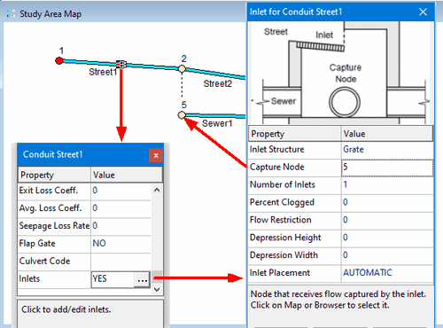

At this point we can assign inlets to our project's streets. The general steps for doing this are:
| 1. | Select the street conduit in which to place an inlet and bring up its Property Editor. |
| 2. | Select the Inlets property and click the ellipsis button (or press Enter). |
| 3. | In the Inlet Usage Editor that appears select a previously created Inlet Structure to use from the dropdown list. |
| 4. | Then select the Capture Node property and enter the name of the node that receives the inlet's captured flow (or simply click the node on the Study Area Map). |
| 5. | Enter values for the other optional usage properties as needed (consult the Inlet Usage Editor topic in SWMM's main Help file to learn more about these). |
This process is depicted visually in the screen shot below.

For our project we want to place the Grate inlet in Street1 with node 5 as its capture node and the CurbOpening inlet in Street3 with node 6 as its capture node.